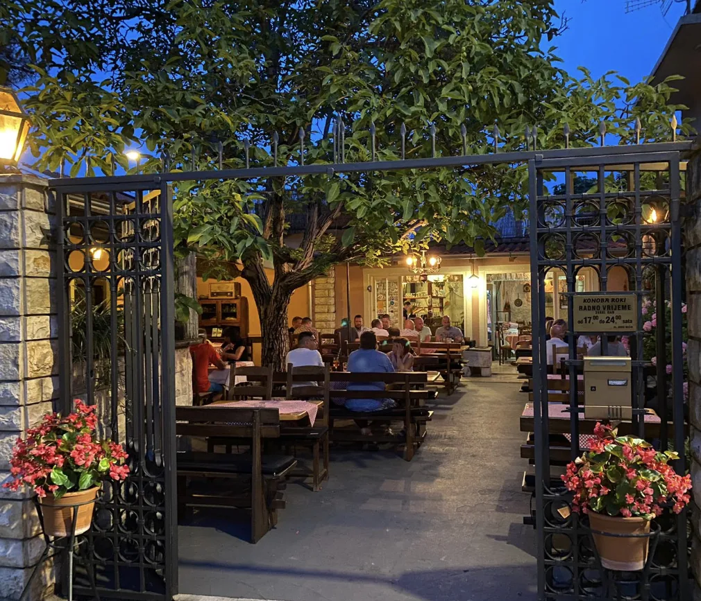
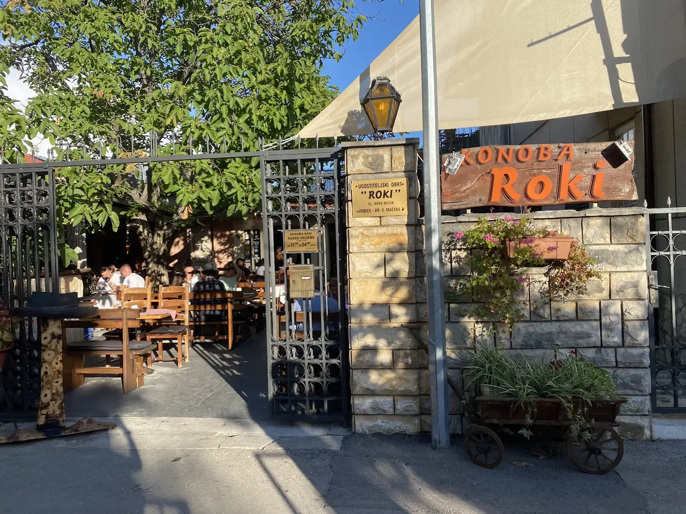
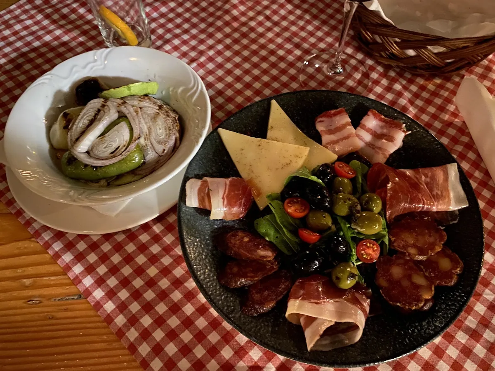
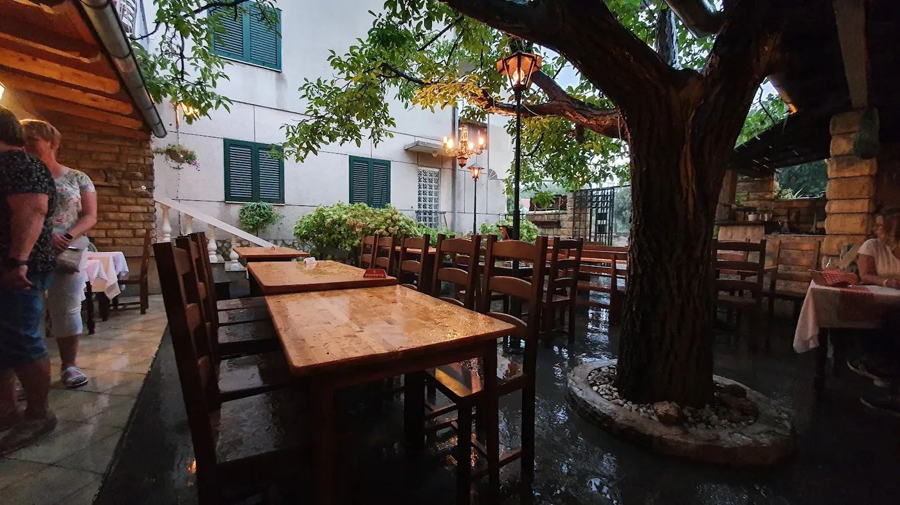
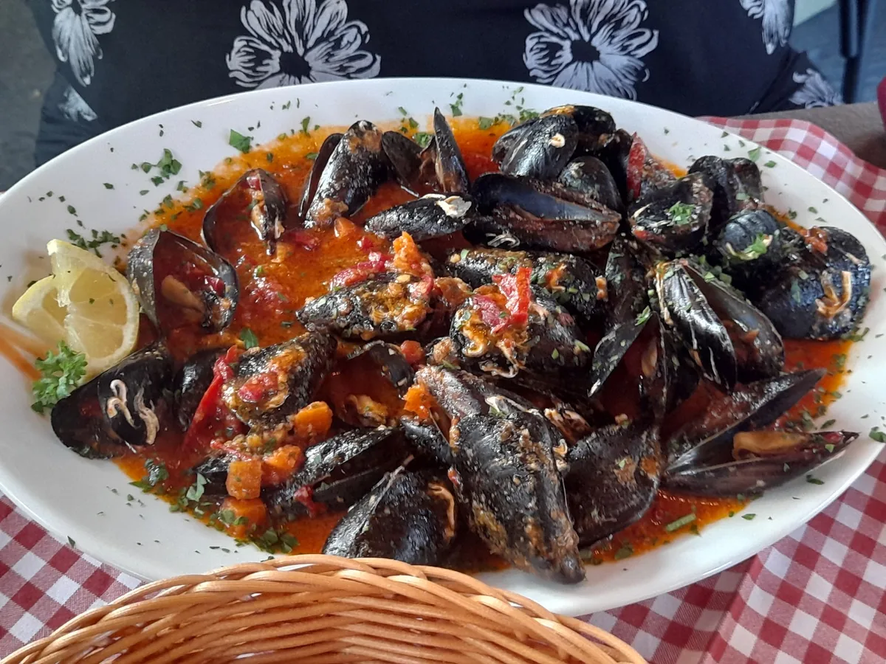
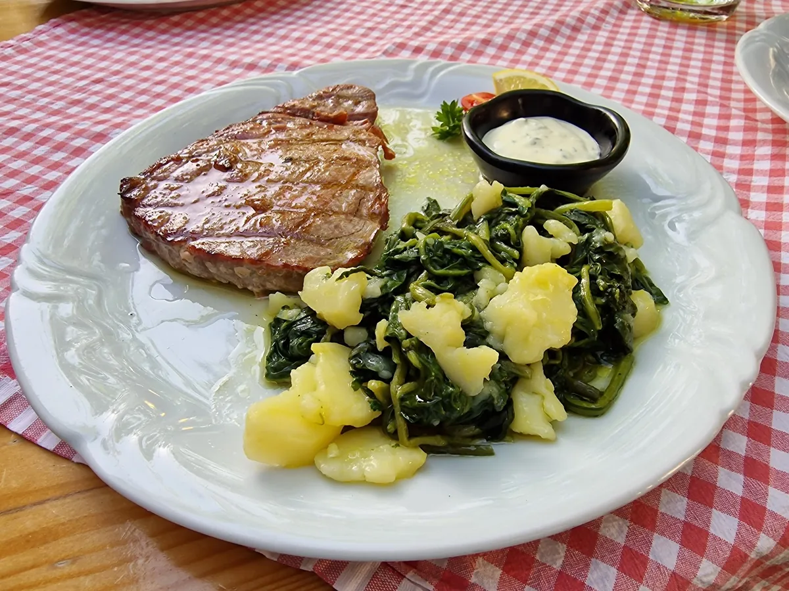
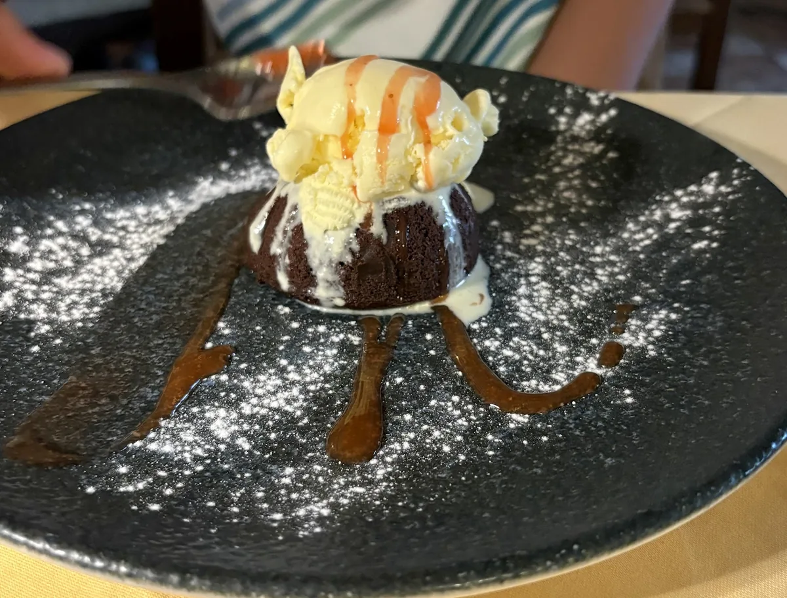

Žar, stol i stablo.
Svaki dan od 17 sati.
Konoba u dvorištu, u mirnoj ulici u Vodicama. Preko gradela ide meso i riba: T-bone i ramstek, ćevapi, cijeli lubin ili orada. Uz njih dagnje na buzaru i sojine šnicle za one koji ne jedu meso.
Stablo daje hlad, žar daje ostalo.
Vodice su ime dobile po izvorima slatke vode što probijaju tik uz slanu, po vodicama. Konoba nije na rivi: stolovi su u zatvorenom dvorištu, oko velikog stabla i pod fenjerima, desetak minuta hoda od mora. Kuhinja je kratka i poštena: žar, sol, ulje i velika porcija. Ne tražite ovdje pjenu i pincetu.
— Konoba Roki, Vodice
S gradela, iz mora i bez mesa
Izbor iz ponude. Dnevnu ponudu i cijene provjerite u konobi ili telefonom. Porcije su velike i uglavnom idu s prilogom.

Roki je ime s daske na ulazu
Ime konobe stoji na ručno oslikanoj daski iznad ulaza, narančasta slova na dasci koju je sunce odavno isprašilo. Ispod nje su kovana vrata, dvorište i stablo oko kojeg su posloženi stolovi.
Roštilj radi svaki dan od 17 sati do kasno. Porcije su velike i idu s prilogom, pa ako ste dvoje, pitajte prije nego naručite dva glavna jela. Za goste koji ne jedu meso tu su sojine šnicle i povrće s gradela.
Stol pod stablom, u dvorištu
Kamen, drvo i crveno-bijeli stolnjaci. Stolovi su u dvorištu, oko stabla i pod fenjerima, pa je ljeti u hladu i mirnije nego na rivi. Ispred je besplatan parking, a psi su dobrodošli.







Javite se, čuvamo vam mjesto
Ljeti se stolovi u dvorištu brzo popune, pa je za večeru rezervacija preporučena. Najbrže ćete do stola telefonom.
Nazovite ili poručite
- Telefon+385 98 810 622
- AdresaUl. dr. Vladka Mačeka 2, 22211 Vodice
- Radno vrijemeSvaki dan 17:00 – 23:00
Za veća društva javite se dan ranije. Ispred konobe je besplatan parking.
Pošaljite upit
- Ponedjeljak – Petak17:00 – 23:00
- Subota – Nedjelja17:00 – 23:00
- Otvorenosvaki dan
Radno vrijeme prema podacima konobe na Google profilu (srpanj 2026.). Izvan sezone ga potvrdite telefonom.